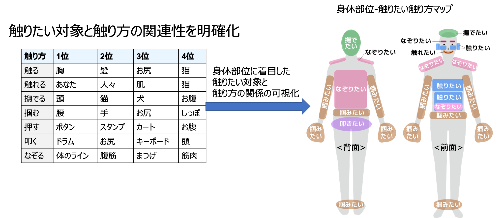
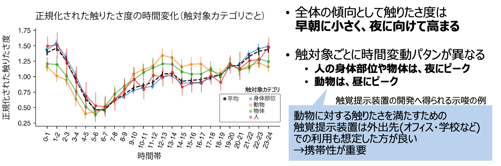
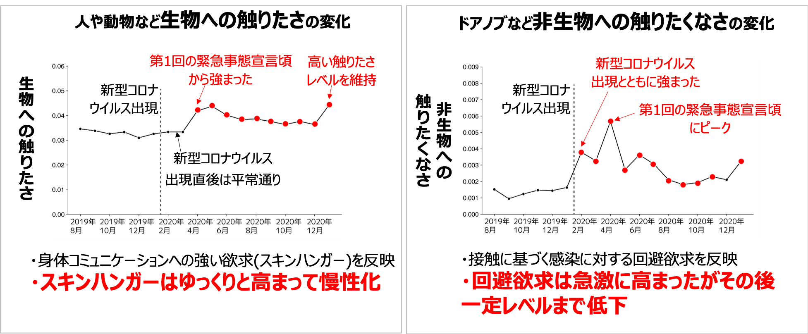

※NTTの横坂さん、東大の伴先生、九大のHo先生との共同研究の成果ですが、ここに書いてあることには私個人の感想が含まれます。
人の皮膚を通じて、振動や力や熱などの物理的な刺激を与える「触覚提示技術」の研究開発が現在進められています。例えば、そこには存在しないはずのざらざらした面をなぞる感覚や、硬めのボタンを押した感覚などを現在の技術で人に提示できます。今後、技術の発展に伴い、ペットに触れたときのぬくもりなど、よりリッチな感触を提示できるようになるかもしれません。 この触覚提示技術の応用先にはどのようなものがあるでしょうか？Ramírez et al.[1]の分類では、主な応用先として「補助・訓練・エンタメ」の3つが挙げられています。このうちで、「補助」は触覚を使ったナビなど、「訓練」は医療従事者向けの触覚提示を使った訓練などと、実用的な価値が見える応用先が盛んに検討されています。一方、「エンタメ」はどうでしょうか。例えば、ゲームの中で、障害物との接触を振動を使って表現してリアリティを向上させることなどに使われています。しかしこのときの触覚提示の使われ方というのは、なにか別の目的（ゲームの場合はリアリティ向上）のためのあくまで補助的なものという位置づけです。触覚提示が仮になくなっても破綻しません。エンタメにおいて、触覚提示そのものを目的とした応用はないのでしょうか？
話は少し変わりますが、人は映画や音楽などの視聴覚コンテンツを余暇の時間に楽しんでいます。これは素敵な映画を「見たい」から見て、優雅なクラシックを「聴きたい」から聴きます。つまり背後には、感覚体験への（顕在的か潜在的かは不明ですが）何かしらの欲求があると言えます。同じように、触覚体験への欲求を我々は日常の中で実感します。家具屋で柔らかそうなクッションを見たら触ってみたくなったり、自分の幼い子どもの頬をなでてみたくなったり、日常の中にときたまそのような瞬間があるのではないでしょうか。このような触覚体験への欲求、つまり人の持つ「触りたさ」という欲求を満たすために触覚提示技術を使うことで、映画や音楽のように人の生活を豊かにする可能性があると考えています。 この触りたさについての先行研究を調べてみたところ、私の興味のある「日常の中でふとした時に感じる触りたさ」について調査した研究はありませんでした。過去の研究では例えば、3Dプリントした物体など日常で触ることの少ない物体を刺激として使い、実験室で触らせるなどして調べていました。もしくは購買行動の文脈における商品への触りたさを調べた有名な研究もあります。しかしいずれも実験室という特定の環境や、特定の文脈における触りたさを調べています。
日常生活の中で発生した触りたさを拾って集めるように調査するにはどうしたらよいのかを考えた結果、ソーシャルメディアの活用を思いつきました。人がつぶやいた「◯◯を触りたい」「◯◯を掴みたい」、などの触りたさが含まれるテキストを解析することで、人の日常における触りたさを理解できるのではないかと思ったのです。以下に我々が行った解析結果を抜粋して掲載します。
まず日常において、どのような触り方で何を触りたくなるのかについて調べました。結果を見て驚いたことが2つあります。1つは触り方によって触りたい対象が大きく異なることです。人には、温度や形やテクスチャなどの触ってわかる要素を抽出するときに、それぞれ異なる触り方をする傾向があることが知られていますが、このことと関係があるかもしれません。もう1つは限られた対象に人の触りたさが集中することです（論文をご覧ください）。世の中には触れる対象が無数に存在するにも関わらず、ほんの一握りの対象に人の触りたさが集中するのは予想外でした。より詳細なレポートは論文[2]をご覧ください。
図1:触りたい対象と触りたい触り方。この情報に基づき、身体部位ごとの触りたい触り方をマッピングした。
次に、人の触りたさが静的なものではなく時間的に変動するものなのかに興味を持ちました。それまでの触りたさの研究では、暗黙の前提として「触りたさは時間不変的な性質をもつ」とされており、実験室実験の際に特に実験実施の時間帯は統制されていませんでした。しかし、他の感覚（視覚や聴覚など）の欲求の研究ではそれらの欲求が時間的に変動することが知られていたので、もしかしたら触覚の欲求も時間的に変動する性質を持つのかもしれないと考えました。そこで我々は触りたさの時間帯による変動を調べることにしました。その結果、一日の中での欲求の顕著な変動が存在することがわかりました。早朝が最も触りたさが小さく、夜に向かって大きくなっていき、深夜に最大（早朝の3倍）となります。さらに、触りたい対象によっても触りたさの時間帯変動変動パタンが変わることを見つけました。他人や物体の場合は夜に触りたさがピークをとりますが、動物の場合は昼間に触りたさのピークをとることがわかりました。より詳細なレポートは論文[3]を御覧ください。
図2:触りたさの時間帯による変動。
研究2は周期的な時間変動についてでしたが、一方でイベント的な変動についても気になります。2020年1月以降、新型コロナウイルスの感染が広がるにつれ、人どうしのいわゆるソーシャルディスタンスの確保や不要な外出の制限などにより、人や物との接触の機会が減りました。その結果として、何かを触ることに対する人の意識はどのように変化したでしょうか。この研究では新型コロナウイルスの出現とともに、どのように触りたさが変動したかを調べました。 図3に結果を示します。生物への触りたさに関しては、新型コロナウイルス出現直後は平常通りですが、第1回の緊急事態宣言頃から強くなり、その後も高い触りたさレベルを維持していったことがわかります。これは身体コミュニケーションへの強い欲求（いわゆるスキンハンガーと呼ばれる現象）が慢性化した可能性を示しています。感染拡大時の、ソーシャルディスタンスの確保や外出制限が影響して、このような触りたさの変化が起きたと考えられます。一方、ドアノブなど非生物に対して、人が他者、動物、物などの何かに触りたくないと思う欲求（触りたくなさ）についても同様に解析しました。ドアノブなどの非生物を触りたくないという欲求は、新型コロナウイルス出現とともに敏感に強くなっていることがわかります。
図3:生物への触りたさと、非生物への触りたくなさの変動。
研究1で特定の対象に強い触りたさを抱くことが明らかになりました。この特定の対象を人が触ったときに感じられる触感をうまく人に伝える仕組みを作ると、人の持つ触りたさを満たせる可能性があります。しかし問題があります。人が感じ取れる触感は、柔らかさ・重さ・粗さなど多次元にわたる一方で、現在世の中にある触覚提示装置では高々3次元程度までしか触感を表現できません。つまり現在の触覚提示装置では、対象の触感を網羅的に表現することは困難です。 そこで我々は、触感を網羅的に表現するのではなく、人が対象に期待する触感のみを表現するというアプローチを考えました。人は、現実では様々な触感を受け取ることができますが、対象ごとに特定の触感イメージのみを持っている可能性があります。この研究は、ソーシャルメディアのテキスト解析では答えを出すのが困難だったので、大規模なオンライン実験を行いました。 図4に人が期待する触感とその触感の方向性を示します。例えば猫は...ということがわかりました。 また柔らかさという触感は、人が触りたい対象に共通して期待する触感であることもわかりました。 詳細なレポートは[5]をご覧ください。
図3:生物への触りたさと、非生物への触りたくなさの変動。